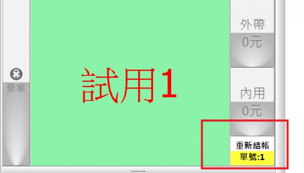

謝謝版主快速回應~~
因我再仔細看了一下，您的小算盤有設計折扣，所以全部取消卻遇上需折扣客人時(如持折價券或VIP者)，此時結帳仍需有折扣設定，是以，小小建議
是否除上述参數設計外，另於主畫面設計一按鈕可呼叫小算盤副程式?
再次為我的嘮叨致歉~~~並感謝~~
1 個回答
您好
勾選自動結帳後 原來的"直接結帳"按鈕 會變成"重新結帳"
按下重新結帳後 會叫出計算機 重新結帳最近的一張單
此總模式優點是相當快速 缺點是缺乏流程引導性
適合反應較靈活的結帳店員
已完成修改 請至首頁下載更新

請參考